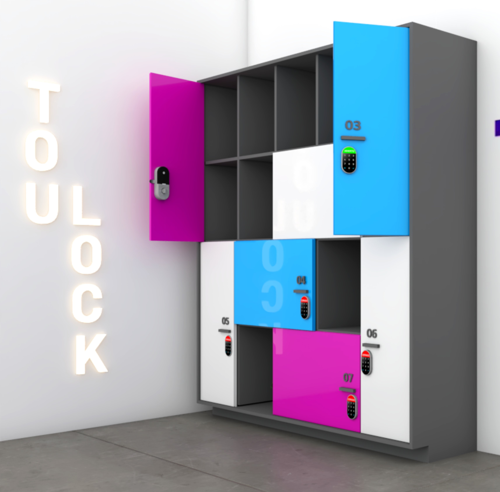

Carrera: Dirección y diseño gráfico. Nací en Lima, Perú. Tengo 28 años. Soy una persona introvertida con habilidades sociales bien desarrolladas. Me gustan muchos los gatos (tengo 4), los colores pasteles, jugar videojuegos y mi área favorita dentro del diseño es el branding, actualmente estoy trabajando en un agencia de marketing digital llamada Klick it en la cual tenga a mi cargo marcas como Fito Espinoza y Ultra Brands.

Para el curso de Laboratorio de Innovación 1, realizamos unos lockers con seguros digitales llamados "Toulock" para cubrir ciertas necesidades de los estudiantes, principalmente de carreras como diseño de interiores, diseño de modas y comunicación audiovisual ya que, según nuestra investigación, son quienes más deben movilizar equipo y materiales desde sus hogares hasta Toulouse, estos lockers los ayudarían a mantener seguros sus pertenencias y a tenerlas siempre a la mano dentro del instituto.

Como idea de proyecto, me gustaría realizar algo para los animales, específicamente a los gatos, como un parlante de sonidos antiestrés ya que los gatos son animales bastante sensibles que suelen estresarse mucho por diversos factores y sería ideal tener un sensor en casa que detecte ciertas pulsasiones en la mascota y reproduzca estos sonidos los cuales no son audibles para el oído humano pero si para los felinos. Con un buen desarollo se podría expandir su uso para perros o animales mayores como vacas, caballos, etc. Adjunto un gatito realizado para el curso de Ilustración.